classification of CW complexes with three cells
Proposition
Let
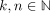
, then depending on and
and  there exist the following CW-Complexes with cells in dimension
there exist the following CW-Complexes with cells in dimension 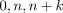
:- exactly
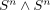
if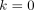
- exactly
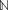
many, namely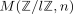
if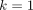
- exactly
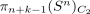
many in either case, where this denotes the set-theoretic quotient of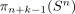
modulo the sign action (in particular, not the group theoretic quotient)
Proof
1)
follows from
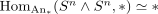
3)
It remains to show the case of
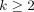
:
using something similar to: classification techniques for low cell cw complexes
Observe that any such three cell cw complex arises as cofiber of an element
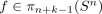
.Moreover,
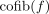
and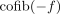
induce homotopy equivalent cw-complexes: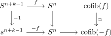
since both vertical maps are homotopy equivalences
Now assume that we have two maps
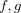
and a homotopy equivalence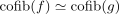
.Then using CW-Approximation we get a diagram
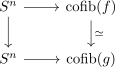
and since , the inclusion
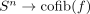
induces an isomorphism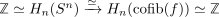
.
In particular the map is also an equivalence, so we get a diagram
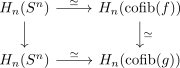
which shows that the map is an equivalence (cf. homology isomorphism between simply connected spaces as weak equivalence).
So now we take the fibers
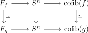
where both fibers are equivalent, since both morphisms
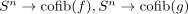
are equivalent in the arrow category.Furthermore, we get induced maps from
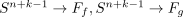
since the compositions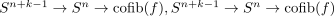
are nullhomotopic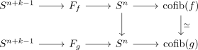
In particular, the relative hurewicz theorem (cf. relative hurewicz theorem for the homotopy fiber / long exact sequence of homotopy groups for a homotopy cofibration sequence) shows - if I haven't messed up indices/index conventions - that the maps
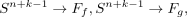
are
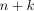
connected, so in particular induce isomorphisms on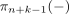
.
This yields a diagram
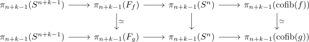
or
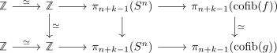
Now recall that the map
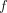
(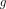
) is precisely the element in which is the image of the prefered generator in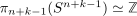
.Now in particular
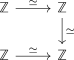
commutes, and the composite (after taking the inverse of the bottom horizontal map) is given by a map
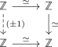
In particular,
and
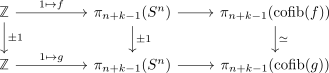
commute, which shows that
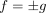
as elements in .